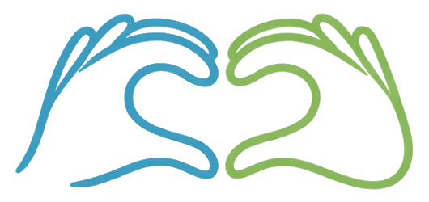

Gamificación que motiva
Puntos, rachas, insignias y ligas para que quieras volver cada día. No por obligación, sino porque apetece.

signofy Unirme a la listaProyecto en desarrollo, con acceso anticipado gratuito
SignoFy es una app gamificada para aprender lengua de signos española. Todavía está en construcción, pero puedes ser de las primeras personas en probarla.
SignoFy no está publicada todavía. No hay miles de usuarios ni estadísticas impresionantes: hay una idea sólida, muchas ganas de hacerlo bien y una comunidad que estamos construyendo desde cero.
SignoFy es un proyecto personal en desarrollo activo. No es una empresa consolidada ni una app publicada: es una idea en la que creo profundamente y que quiero que sea útil, accesible y gratuita para cualquiera que quiera aprender LSE.
Apuntarte a la lista de espera significa que serás de las primeras personas en acceder cuando esté lista, que tu opinión ayudará a dar forma a la app y que recibirás actualizaciones honestas del progreso, sin humo ni promesas vacías.
Aprender lengua de signos debería ser accesible para todo el mundo. Las opciones actuales son caras, aburridas o no están adaptadas a LSE. SignoFy nace para cambiar eso: aprendizaje real, gamificado, gratuito y creado con respeto a la comunidad sorda.
Puntos, rachas, insignias y ligas para que quieras volver cada día. No por obligación, sino porque apetece.
El diccionario y las lecciones se construirán con y para personas sordas. No hay otra manera de hacerlo bien.
El aprendizaje no puede depender del dinero que tengas. El plan gratuito será completo y de verdad.
El método que queremos construir, basado en repetición espaciada y motivación continua.
Maqueta del diseño. La app aún está en desarrollo.
Cuéntanos tu nivel y tus objetivos. La app te genera un plan personalizado.
10 minutos al día son suficientes. Cada sesión combina vídeo, práctica y test.
Cada lección completada te da XP, mantiene tu racha y te acerca a la siguiente insignia.
Únete a retos, conecta con la comunidad y aplica lo aprendido en contextos reales.
Algunas funciones ya están en desarrollo y otras vendrán después. Sin adornos.
De principiante a avanzado, con sesiones de 5 a 10 minutos pensadas para el día a día.
Gana puntos, mantén tu racha diaria y sube en el ranking semanal de tu liga.
Signos en vídeo con búsqueda por palabra, categoría y nivel de dificultad.
La cámara analizará tus manos y te dará feedback en tiempo real. Es una función compleja que llegará más adelante.
Practica con otras personas, participa en retos semanales y forma grupos de estudio.
Descarga lecciones para practicar en el metro, en el campo, donde sea.
¿Tienes alguna función en mente? Si te apuntas a la lista de espera, puedes dejarnos tus sugerencias. Las más pedidas tendrán prioridad en la hoja de ruta.
Sin fechas inventadas. Sin promesas que no podamos cumplir.
Completado
Definición de la idea, identidad visual, estructura de pantallas y flujo de usuario.
Ahora mismo
Sistema de lecciones, motor de gamificación (XP, rachas, niveles) y base de datos de signos básicos.
Próximo paso
Las personas apuntadas serán las primeras en probar la app. Su opinión definirá la versión final.
Después
Versión 1.0, completamente gratuita, con las funciones principales probadas y pulidas.
Futuro
Más contenido, reconocimiento de signos por cámara, grupos de práctica y más lenguas de signos.
Apuntarte es gratis, sin compromiso y sin tarjeta de crédito. Solo te avisaremos cuando haya novedades de verdad.
Confirmación inmediata. Recibirás un email nada más apuntarte.
Sin spam. Solo te escribiremos cuando haya algo importante que contar.
Baja cuando quieras con un solo clic.
Tus datos nunca se venden ni se comparten con terceros. Cumplimos el RGPD.
Gracias de verdad por tu confianza y tu paciencia mientras construimos esto. Estarás entre las primeras personas en probar SignoFy cuando esté lista.
¿Tu duda no está aquí? Escríbenos a hola@signofy.app.
Honestamente, no tenemos una fecha fija todavía. Preferimos tomarnos el tiempo necesario para hacerlo bien antes que lanzar algo a medias. Las personas de la lista de espera serán las primeras en saberlo.
El plan base será gratuito de verdad, sin límite de tiempo. Más adelante puede existir un plan de pago con funciones extra, pero las lecciones principales y el diccionario básico serán siempre gratuitos. No creemos en los modelos que encierran el aprendizaje detrás de un muro de pago.
Para cualquier persona que quiera aprender lengua de signos española: familiares de personas sordas, profesionales, curiosos, estudiantes. También esperamos que sea útil para personas sordas que quieran practicar con oyentes o enseñar LSE.
Tu email y tu nombre se usan solo para avisarte del progreso de la app y del acceso a la beta. No se venden, no se comparten con terceros y puedes borrarte cuando quieras con un clic. Cumplimos el RGPD.
¡Sí! Lo más valioso ahora mismo es apuntarte y contarnos qué necesitas que tenga la app. Si eres intérprete de LSE, persona sorda o tienes experiencia en diseño o desarrollo y quieres colaborar, escríbenos a hola@signofy.app.
Es una prioridad absoluta. Estamos construyendo el contenido con la colaboración de personas sordas nativas e intérpretes certificados, y no publicaremos ningún signo sin esa validación. Si tienes experiencia en este ámbito y quieres ayudar, ponte en contacto.